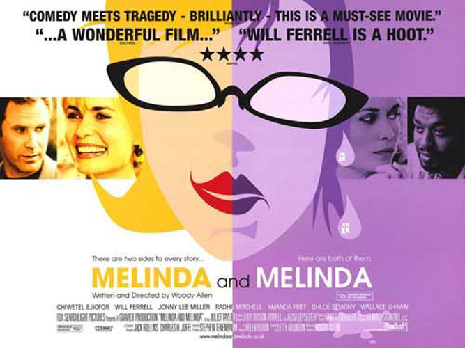
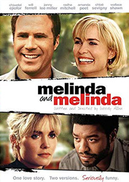
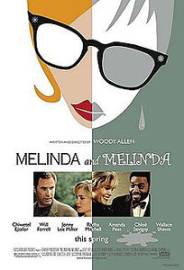
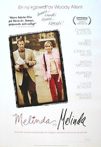
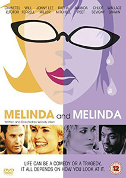
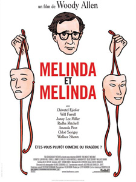

Radha Mitchell plays Melinda in both versions. Chloë Sevigny, Jonny Lee Miller, and Chiwetel Ejiofor star with her in the 'tragedy', while Will Ferrell and Amanda Peet star with her in the 'comedy'. Steve Carell has a small part as Ferrell's character's friend.
Two alternating stories, one comedy and the other tragedy, about Melinda's attempts to straighten out her life.
Al, Louise, Max and Sy - four literary types who work in the theatre business - are discussing what they believe to be the real life truths underlying their work. Max writes primarily tragic plays while Sy writes primarily comic plays.
Al proceeds to tell them a real story of a troubled woman named Melinda Robicheaux showing up unexpectedly at a door in the middle of an important business dinner party. Melinda long ago left her physician husband to embark on a relationship with who she initially believed to be the man of her dreams, which ended up not being the case. Melinda tries to put her life back together with the help of select people at the dinner party, some who have their own ulterior motives. Melinda's appearance also opens up the cracks existing in the marriage of one of the couples at the dinner party, while it leads to the dissolution of a friendship that has existed since college.
With this basic outline of a story, Max and Sy try to make their point of life being truly a tragedy or comedy on spinning Melinda's story with their own mindset.
Woody Allen has said in "Conversations with Woody Allen" that he wanted to cast Winona Ryder in the title role but had to replace her with Radha Mitchell because no one would insure Ryder due to her arrest for shoplifting – this would have made it impossible to obtain a film completion bond. Allen further stated he was sad because he had written the part for Ryder after working with her on Celebrity. In the same interview, he also claimed to have intended Will Ferrell's part for Robert Downey, Jnr. but, again, insurance got in the way due to Downey's history of arrests and drug abuse.
During filming, Radha Mitchell was the only actress who had the entire script. The other cast members just had their own storylines. Furthermore, Radha Mitchell received her role without an audition. Woody Allen saw her in Ten Tiny Love Stories (2002), and liked it so much, that he decided to cast her. However, due to the limited budget, Radha Mitchell, an Australian, couldn't have a dialect coach for her role as an American.
- Central Park, Manhattan, New York City (crossing the lake bridge);
- Belmont Park, Elmont, New York (Hobie takes Melinda there);
- Lenox Hill Hospital, 210 E. 64th. St., New York City (exterior entrance);
- Dune Road, The Hamptons, Long Island, New York.
Susan: "I wish we could afford a place in the Hamptons. Everybody who's anybody has one."
Hobie: "Yeah, but if you're somebody who's nobody, it's no fun to be around anybody who's everybody."
"The [Wallace] Shawn character says, 'Moments of humor do exist (in life). I exploit them, but in a tragic context.' Allen couldn't have said it better himself." - Eric Harrison : Houston Chronicle
"It's middle-rung Woody, but compared to such dismal efforts as Hollywood Ending and Anything Else, the movie is a godsend." - Eleanor Ringel Cater : Atlanta Journal




